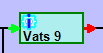
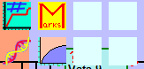
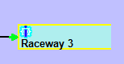
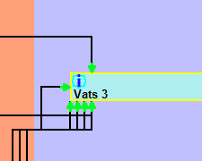
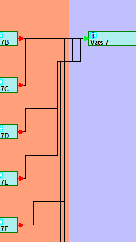

Hatchery Information System
The Hatchery Information System is a hobby project I created to try to solve some of the issues I have seen with fish management agencies attempts to write fish hatchery data management systems. Those systems often turn out to be cumbersome and unloved because the problem is a particularly difficult one. The Hatchery Information System uses a graphical system that allows functionality to be extended using third party plugins. This makes for an easier interface to work with and greater flexibility to handle different requirements, while also removing the bottleneck that exists with most systems where only one team can add any functionality to the program. This approach results in a program that can be adjusted to meet a wide variety to needs, thereby extending the applicability of the program.
When a programming problem is such that all solutions are large, then making a program that is suitable for the widest possible group of people makes more sense than making a narrowly focused program. The intention behind the Hatchery Information System design was to make a universal fish hatchery data management program suitable for all types of uses. I believe that the game-style approach taken by the Hatchery Information System is the best possible design, though I remain deeply ambivalent as to whether this is a problem that should be solved at all.
Fish hatcheries produce large amounts of data annually. Different hatcheries have to track different data, but all hatcheries, and especially conservation and research hatcheries, will have to track large amounts of diverse data. This makes managing and storing the data both costly and time consuming. I am not aware of any organization that has been able to write a program for collecting hatchery data without several years of effort and considerable cost. Spending the time and money required to come up with a hatchery data management system is probably not justified unless the program can serve for several years, which is far more likely to be the case if the program can change as the needs of the hatchery programs change.
The Hatchery Information System is a program that uses principles of game design to create a program that is both easy to use and readily malleable. The program is based on a series of models for different aspects underlying fish hatchery operations. On top of that structure, all data collection and reporting is performed using plug-ins, which means that adding and removing data collection can be performed with ease. While the models remain a fairly large program, all of the plug-ins are quite small, which means that, while maintaining the overall program still has a cost, changing the program is quite cheap.
The original principle that started this program was the idea that whatever the hatchery personnel did on the concrete they should be able to do on the screen, graphically. The reason for this is two-fold. First, I had noticed that learning actions and retaining how to perform actions were a significant problem with hatchery data management programs. This is due to there being several possible data items that could be entered, along with some data being collected daily (e.g. mortality, feed, etc.), other data collected monthly (e.g. weight, length), and a bit collected yearly (release, transfers), which means that there is ample time between repetition of some actions for a person to forget the process. Since humans are visually oriented, in general, a graphical interface that is clear and consistent, makes it easier to learn and retain data entry processes.
The second reason for making a graphical interface has to do with an observation about hatchery data. The vast majority of the data that can be collected for a hatchery consists of nothing more than a number. Whether it is amount of feed, number of mortality, average weight of fish, and many other things, the actual data recorded is a single number. The difficulty is not in the number itself, but in choosing where to enter the number. In programs, there are a few standard approaches to allow a user to select an item from a set of items. These approaches include things like list boxes, drop down boxes, and grids. Each approach has some advantages, but all three of those become slow and awkward to use when the number of items exceeds around a dozen, or so, items. Scrolling through lists is not much fun for anybody. For that reason, various solutions have been tried to facilitate choosing an item from a list, such as sorted lists, search boxes, and auto complete boxes. These approaches work poorly in the case of fish hatcheries. In some fish hatcheries, the number of rearing units could be in the hundreds, and the names will all be very similar. For example, Raceway 11W differs from Raceway 1W by only a single digit well to the right. A sorted list doesn’t help much, nor does something like auto complete, due to the similarity of the names. Finding one rearing unit out of a list of a hundred or more, will be both tedious and error prone. By showing the rearing units on the screen in roughly the way they appear at the facility, makes selection vastly easier. Since the actual data is often just a single number, selecting the location becomes a significant part of entering hatchery data. Speeding up selection speeds up all data entry.
The main screen area consists of various types of rearing units arranged into groups as they would be arranged in the hatchery. While the display shows horizontal rows of rearing units, there is no requirement that they be arranged like this. The screen also shows a few different types of rearing units, such as Heath stacks at the top, rectangular raceways below them, fish marking trailers, and a pair of ponds that can be divided into quadrants, and more raceways below them. It is possible to drag the screen around to navigate, as well as zooming in and out.
The side stall icons, bottom stall icons, button bar items, and menu items, are all functionality for interacting with the fish or the rearing units displayed on the screen.
Side stall icons can be dragged and dropped onto raceways. These can be used for things like weighing fish, splitting raceways, feeding fish, and so forth. If the user takes something to a group of fish, then a side stall icon would be appropriate. Another use would be adding new fish into the system, such as a transfer from a different facility. The key is that the user indicates which raring unit or group of fish they want to apply the action to by dropping the icon on the appropriate rearing unit.
Bottom stall icons can have fish dragged and dropped onto them. These can be used for recording mortality, releasing fish, transferring fish to other facilities, and so forth. Any action that removes fish from the system would be appropriate as a bottom stall icon.
Button bar elements are for those operations that make sense for the whole hatchery, or for a selection of multiple rearing units or groups of fish. These might include reports and summaries, but several of the button bar elements shown are similar to side stall icons. The reason for this is that, while it is quite easy to drag and drop an icon to perform an action, that becomes tedious if it has to be done repeatedly, such as entering mortality for every rearing unit in the facility. Therefore, it is also possible to select multiple individual rearing units, or a whole group of rearing units, in which case clicking a button bar element will allow it to work with the selected rearing units oar groups of fish. This allows for fast, intuitive, graphical selection, along with a faster interface than repeatedly dragging an icon to different rearing units. Therefore, several actions have both side stall icons for easy learning and low repetition, and button bar icons for faster data entry.
Finally, the menu items are for operations that do not necessarily deal with the hatchery, but instead are for controlling the program, along with any action that has no visual interface.
Each rearing unit may or may not have fish, and need not even have water (all rearing units shown do have water, as there is a different graphic for an empty rearing unit). Some rearing units can be divided by adding a divider screen, also called a splitter. This is done by dragging the side stall splitter screen and dropping it on a rearing unit, or else dragging an existing splitter and dropping it either elsewhere in the same rearing unit, or on another rearing unit. Much like a physical divider screen, once a screen is in a rearing unit, it can be moved around or between rearing units. Even better, these graphical divider screens can’t transmit disease between rearing units.
Not all rearing units can be split, while others can only be split at keyways. Dropping a splitter onto a rearing unit that can’t be divided does nothing. What happens when a splitter is dropped on a rearing unit that can only be divided at a keyway is up to the rearing unit, though generally the splitter will snap to the nearest keyway.
Within the rearing unit, there are eight RWPB stalls, which are icons that give information about the fish in the rearing unit, or about the rearing unit itself. These can be used for informational things, such as genetic information about the fish, size and growth, and so forth. They can also be used to enter or alter data for the rearing unit much like a side stall, though this is somewhat discouraged, since there are only eight of them that can be displayed at any one time.
Sometimes, there is not sufficient space within a rearing unit to display the RWPB icons. This is often due to either the zoom level of the display or the size and shape of the rearing unit being such that there isn’t sufficient space. When there isn’t sufficient space, the RWPB stalls are replaced by the blue gear icon. If the mouse lingers over that icon, a floating window will pop up with the RWPB stalls for that rearing unit. This allows rearing units to be quite small while still retaining full functionality, as well as allowing for awkward shapes, such as a circular tank divided into six wedges.
So, there are icons on the sides, icons on the bottom, icons in the rearing units, and icons on the button bar, but what are those icons? With only two exceptions, they are all plugins. All the side stall icons (except for the divider screen), button bar icons (aside from one), bottom stall icons, RWPB icons, most of the menu items, and even the rearing units themselves, are dynamically loaded content. This was the second key design decision: Almost nothing is forced on the user. Every installation could have different functionality, even at the same facility. Furthermore, the functionality of the program can be increased or reduced by simply adding or removing files from a folder.
The main program acts as a host for the underlying models and a host for the plugins that interact with the models. If a person comes up with a different way to record mortality, they can create a new plugin that can either work with the existing plugins, work with part of the existing plugins, or replace it entirely. If they want to hook up an automated flow gauge and have the program record flow to the database, they can write a plugin for that. If they have sinusoidal rearing units that can only be divided in certain places, they can create a plugin for that. They can decide whether the plugin should act as a side stall (and can be dragged to a rearing unit), a bottom stall (fish can be dragged to the icon), an RWPB (information about a rearing unit, or even data entry for a specific rearing unit), a button bar button (information about the whole hatchery, or the currently selected set of rearing units), or a menu item (non-interface items, configuration items, and so forth).
Once the Current Time View was working as I wanted it, I realized that it had some drawbacks. For one thing, it really only showed the state of the hatchery at a single point in time. It was possible to add plugins that changed the time that was shown, but that didn’t really help all that much. Seeing the hatchery at any single point in time didn’t show the progress of change over time. Therefore, a second view of the data was added, which is the Move Web View. Move webs are the underlying data structure of hatcheries. The Move Web shows how fish move from place to place through the hatchery. The main purpose of the Fish Business Object model is to manage the move webs in a hatchery. Move webs prove to be an excellent model for managing hatchery data, and are even better if they can be viewed as a whole, which is the purpose of the Move Web View.
In general, the Move Web View shows the progression of fish through the hatchery over time. In the display, time progresses from the left side of the screen to the right side of the screen. Unfortunately, the horizontal scale of the image cannot be made consistent. My initial intention was that the width of a rearing unit segment would represent the length of time the fish remained in that rearing unit, but this could not be done correctly. The problem was that the display had to show all relevant steps as the fish moved through the hatchery system. In some hatcheries, fish might spend only days in one location, while spending months in another. In fact, depending on how detailed the hatchery wished to follow the progress of the fish, they might spend as little as minutes in some locations, such as fish marking trailers and transfer tanks. To provide a consistent scale for such diverse time spans, either some rearing units would take up no space at all, or others would require extensive horizontal scrolling, as they would be many times the width of any possible screen. Rather than adhering to such an awkward design, I felt it was more visually useful to abandon a consistent time scale and try to fit the whole extent onto the screen without scrolling. This means that the progression of the fish over time is shown, but the duration of time during which fish occupied any particular rearing unit is not well represented by the display.
The Move Web View started out as a nearly static view that only allowed the user to see information about the fish in a single move web. The goal was to make an interface that would allow the user to easily get information about the fish in the hatchery as to what they were, how they mixed, where they went. The user could hover the mouse over the moves and the rearing units to see information about the fish in those locations. They could change what was displayed in the tooltips, as well, but that was all they could do. Even with that, it quickly became obvious that the Move Web View was so useful that it would be where most users would find the most value. Entering data in the Current Time View is often the easiest, as it is very easy to see all the rearing units together on the screen at the same time, but when it comes to visualizing hatchery operations over time, the Move Web View was clearly superior. Once I realized that, it also became obvious that the Move Web View couldn’t be static. People would want to be able to do almost the same things on the Move Web View that they could do in the Current Time View. There are a few differences between the two, but the Move Web View became a full featured means to interact with the data over time.
The side stall icons work almost the same as they do in the Current Time View, except that most can be dropped on either a rearing unit, on a move, or even on neither one, in some cases. Bottom stall icons also work the same as in the Current Time View. Button bar icons work only on the rearing units in the current move web, with the exception of those that change the appearance of all the move webs as they are displayed, along with some button plugins that allow move webs to be combined onto a single page.
Additionally, there are more interactions possible with a rearing unit.
There are RWPB icons for each rearing unit, just as there are in the Current Time View, but since there was insufficient space to draw the individual icons in the rearing unit the individual icons are accessed by hovering the mouse over the solitary icon in the upper left corner of the rearing unit. This brings up a floating image of the eight RWPB icons. The Current Time View works the same when the view is zoomed out too far to leave space for the RWPB icons.
One thing that is missing from the Move Web View is all of the mortality moves. Mortalities are moves, just like any other, but if mortalities are being enumerated every day, there would be so many of them that they would be a solid border around each rearing unit. Individual mortalities would be indistinguishable from one another. Therefore, I decided to leave mortalities off entirely. Viewing and managing mortalities can be done via a plugin.
A few other things that can be seen for a rearing unit in Move Web View is that a rearing unit that still has fish will have an open end, while one that has been emptied will have a closed end.
The location of moves in and out of a rearing unit indicate when the move happened. For example, a move out of the end of a rearing unit shows that the move included all the remaining fish in the rearing unit, thereby emptying it.
Since the scale of time on the horizontal axis is not linear, the spatial distance between two moves in or out is not meaningful. However, the relative position of two moves is meaningful.
If a certain move happened after some other move, then the arrow for the move will be found to the right of the move it is after. This allows the user to visualize the sequence of how fish were added or removed from a rearing unit. Also note that some moves will have been recorded as having happened all at the same time. The date of any move can be seen in the tooltip for the move when the mouse hovers over the move.
While it may be that no two moves are truly at exactly the same time, it isn’t always useful for data management to differentiate the order of moves. Therefore, allowing multiple moves to be at the same time, users have the flexibility to enter data as best suits their needs. If they want more precision, they can have it. If they don’t need to be so precise, the program won’t require them to be.
Therefore, the Current Time View shows the current state of the hatchery, while the Move Web View shows how groups of fish moved through the hatchery over time. The Current Time View allows the user to visualize the current state of the system, select rearing units intuitively, and interact with the system as it currently stands. The Move Web View allows the user to view and interact with historic data, whether the fish are still currently in the hatchery, or not. The Move Web View also allows the user to enter and edit both new and historic data in a versatile, drag and drop, fashion. The Move Web View is not quite as intuitive as the Current Time View, but it is still very easy to learn, easy to use, and fully extensible via plugins.
The plugin design allows every hatchery to choose just the functionality they need, as well as to create custom plugins for their specific needs, which can then be made available to anybody else who would benefit from them. The design also allows hatcheries to change their operations over time while the program only need change the set and behavior of the plugins. However, the use of plugins also means that the Hatchery Information System can not be a web application.
All web applications run off of web servers. There is a powerful advantage to web applications, as there is only one installation and one database. All users are just hosting the display of the data in the web browser on their local machines. Any code used by the web application must be either on the web server, or on some trusted external site. This makes it difficult, though not impossible, to customize a web application to an individual user, but it precludes the ability to extend the application through plugins.